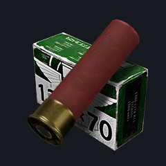

Les 6 tiers — lire une fiche
| Tier | Rareté | Usage |
|---|---|---|
| T1-T2 | Communes | IA, éco-runs, cibles non blindées |
| T3 | Intermédiaire | Normal confort, jambes, budget — le cheval de bataille du farm |
| T4 | Rare | Le plafond Normal / standard Lockdown — BP, BS, SS109, M80 |
| T5 | Épique | Lockdown haut / Forbidden — 7N39, AP, M61, M995 |
| T6 | Légendaire | Forbidden seul (PPBS…) |
Chaque munition est lue sur 3 colonnes : pénétration (traverse l'armure), dégâts (HP infligés), dégâts armure (use la durabilité — tactique clé en S7). Les 12 références phares de notre référentiel couvrent les calibres les plus joués.
Plafonds par mode — ne gaspille plus
⚖️ Caps officiels S7
Normal ≤ T4 · Lockdown ≤ T5 · Forbidden illimité. Ton stock T6 en Normal ne fera rien de plus que du T4 — il vaut le revendre (voir économie).- 📦 Conserve T4 en stock : couvre Normal + la plupart des Lockdown — le tier de valorisation maximale de ta stash.
- 🎽 Adapte au kit : un AK-74N budget en Lockdown mérite 1 chargeur T5 + T4 pour le reste, pas 4×60 de T5.
La technique du top-load
La technique validée par la communauté :
- Les 5 premières balles = T4/T5 (les plus chères).
- Les suivantes = T3/T4 moins chères.
- Résultat : ouverture de duel avec la pénétration haute, puis consommation économique si le fight dure — le meilleur ratio coût/TTK d'ouverture.
🎯 Corollaire S7
La pénétration est désormais déterministe via la durabilité : tes balles haut de gamme perforent mieux une armure déjà fatiguée. Combine : top-load + focus sur les cibles dont tu as vu la durabilité chuter (souvent après un premier duel).Choix par contexte
| Contexte | Munition | Logique |
|---|---|---|
| Farm / Normal | T3-T4 (PP, BP, PS) | IA + gear moyen, coût maîtrisé |
| Lockdown standard | T4 (BP/BS/SS109) | Le tier légal maximum rentable |
| Lockdown serré / Forbidden | T5 (7N39, AP, M61, M995) | Duels d'armure — indispensable |
| Leg meta (SMG) | T5 à prix SMG (AP 6.3, .45 AP, SS190) | Jambes — pénétration inutile, dégâts max |
| Shotguns |  Flechette / Type 8 / AP slugs | Polyvalence / chair / précision |
| Infected Zone | T3 en volume + 1 chargeur T4+ | Hordes T3, rivaux T4+ (règle 120-180 rds) |
| Snipers | M61 (T5) / LPS (T4) | Un coup — pénétration au-dessus de tout |
Changements de munitions en S7
- 🔧 SS190 (P90) : pénétration 41→42 · dégâts armure 18→19.
- ⚖️ Caps par mode instaurés (N=T4, L=T5, F=libre).
- 🎲 RNG T5/T6 supprimé : la pénétration dépend de la durabilité — voir balance.
- 🧟 Dégâts « chair » dédiés aux mutants (modes zombies) — la branche flesh gagne en valeur.
Calculateur STK / TTK
Choisis une arme (sa cadence sert au TTK), la munition correspondante, la classe d'armure visée et sa durabilité — le modèle communautaire calcule la chance de pénétration, les dégâts par coup, les coups nécessaires (poitrine 85 PV) et le temps de mise à mort :
FAQ munitions
Règle générale : 2-3 chargeurs principaux + 1 de secours. En Infected Zone : 120-180 rds. Le top-load fait le reste de l'optimisation — moins de balles chères, même efficacité.
Oui si ton style ne joue pas le Lockdown serré : les T5 invendus dorment pendant que ton flipp Deke pourrait les transformer en Koens. Garde 1-2 packs « jour J », vends le surplus.
Sources — reddit top-load technique · data-ammo.json (70 munitions, caps S7) · patch notes S7 · guides communautaires. Vérifié le 17 novembre 2026.